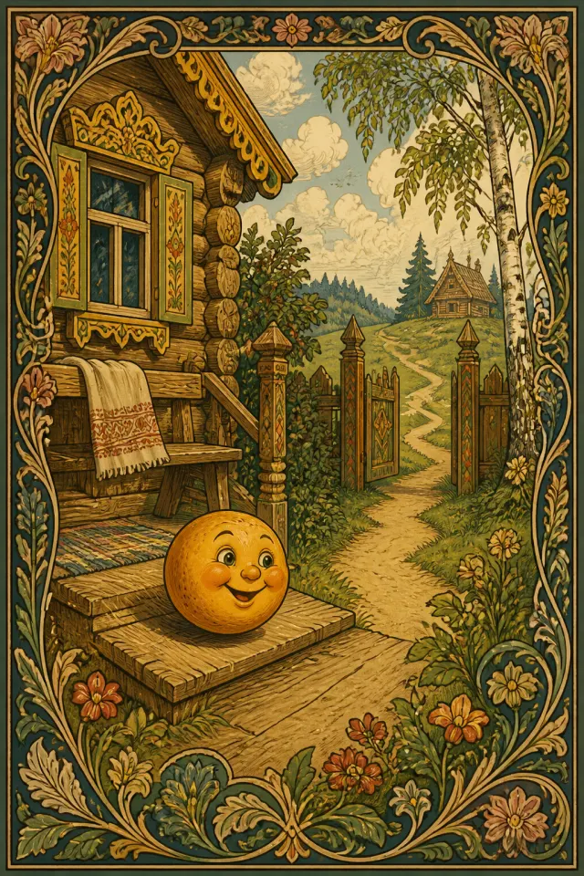
Русские народные сказкиСлушать
Колобок
Возраст: 3+ · Популярность: Очень высокая · Чтение: 3 мин чтения
Персонажи: Колобок
Тёплый каталог для чтения вслух
Здесь живут добрые, волшебные и мудрые сказки для семейного чтения — русские, индийские, американские, французские и любимые истории со всего света.
Подкаст
В гостях у Каму: сказки для детей
Аудиосказки проекта «Сказки от Каму» для спокойного семейного прослушивания.

Возраст: 3+ · Популярность: Очень высокая · Чтение: 3 мин чтения
Персонажи: Колобок
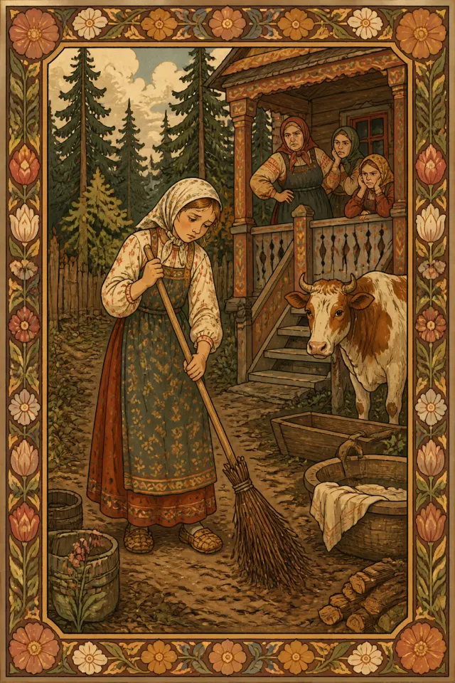
Возраст: 6+ · Популярность: Высокая · Чтение: 5 мин чтения
Персонажи: Хаврошечка
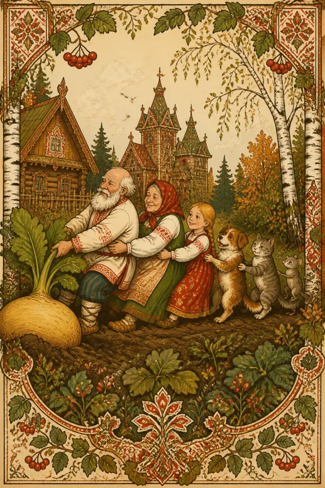
Возраст: 3+ · Популярность: Очень высокая · Чтение: 1 мин чтения
Персонажи: Дед, Бабка +5
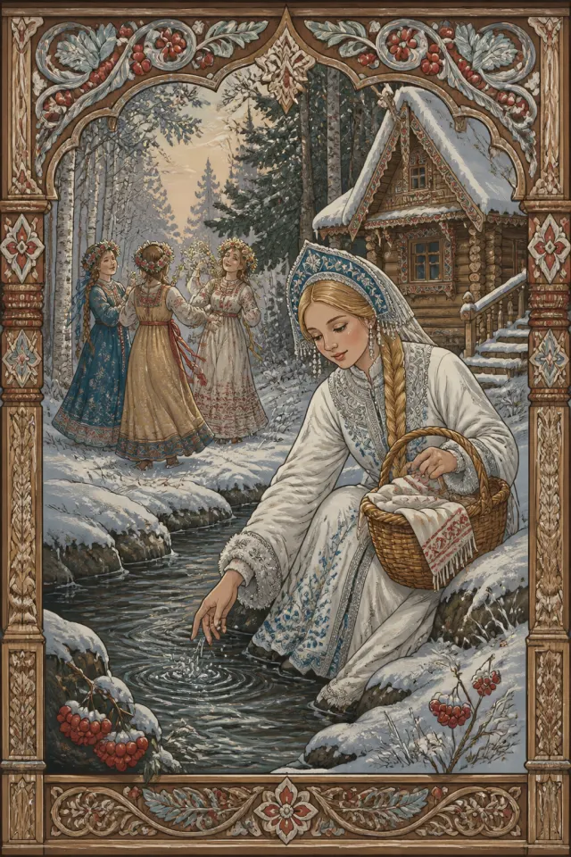
Возраст: 6+ · Популярность: Высокая · Чтение: 3 мин чтения
Персонажи: Снегурочка
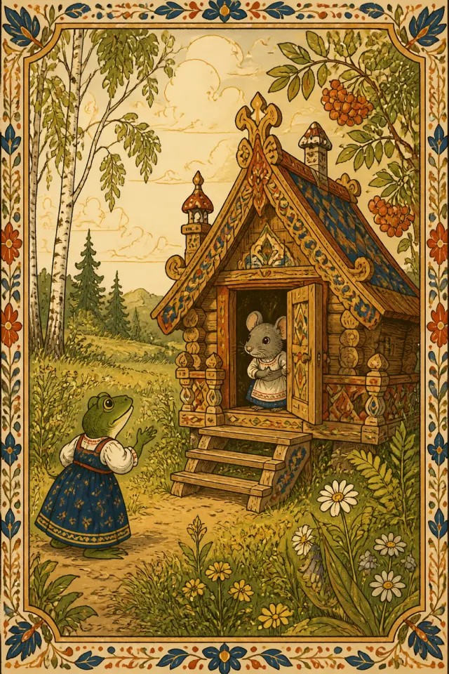
Возраст: 3+ · Популярность: Очень высокая · Чтение: 2 мин чтения
Персонажи: Животные
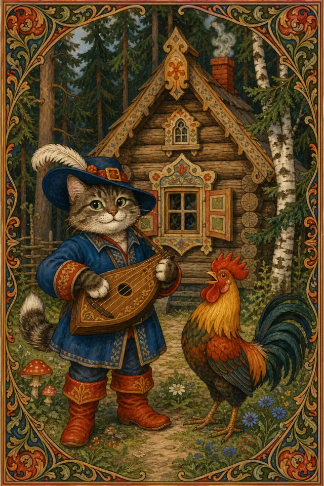
Возраст: 3+ · Чтение: 4 мин чтения
Персонажи: кот, петух +1
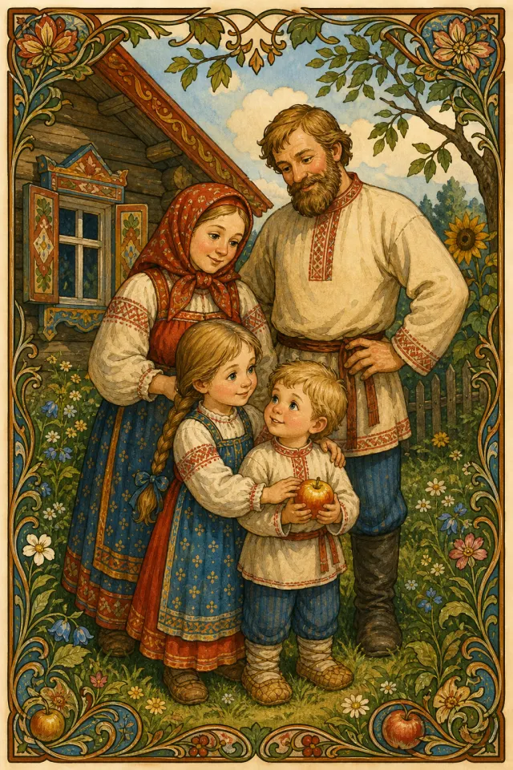
Возраст: 3+ · Чтение: 3 мин чтения
Персонажи: девочка, братец +2
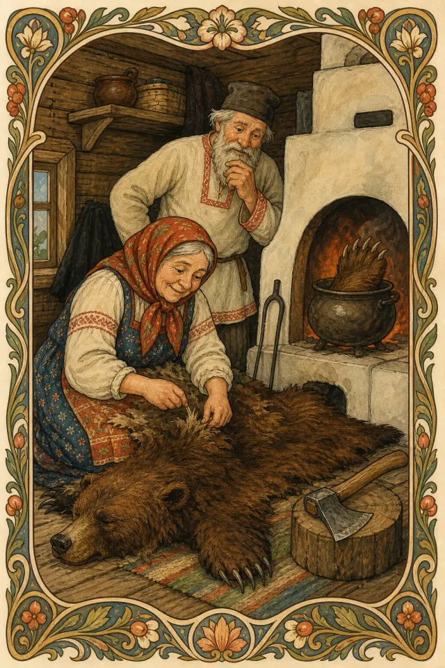
Возраст: 3+ · Чтение: 3 мин чтения
Персонажи: старик, старуха +1
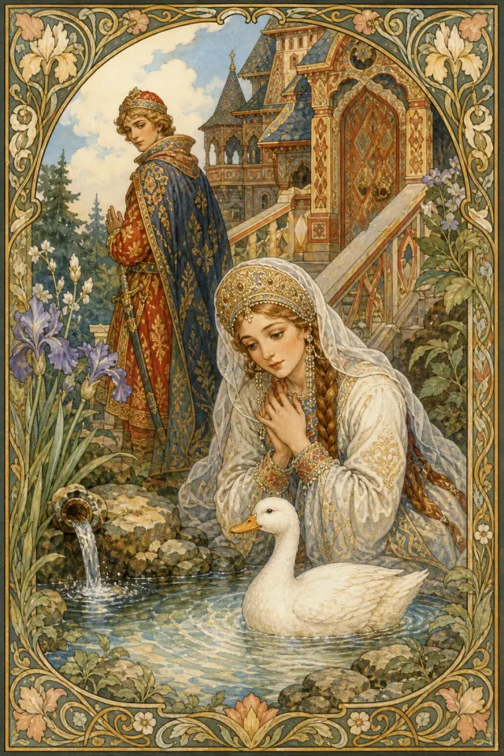
Возраст: 3+ · Чтение: 5 мин чтения
Персонажи: княгиня, князь +1
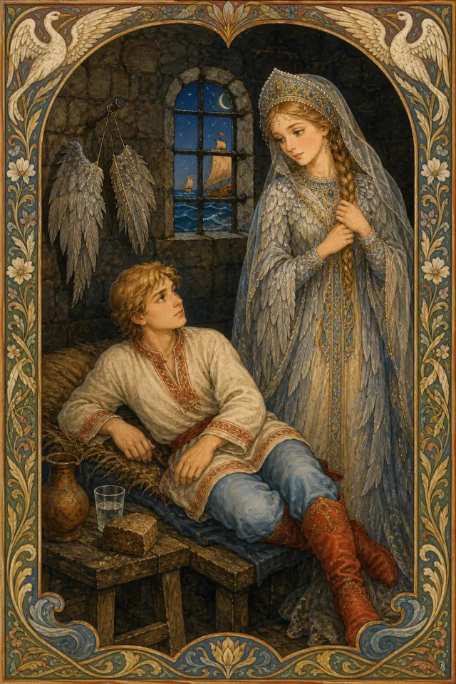
Возраст: 4+ · Чтение: 5 мин чтения
Персонажи: царевна, серая утица +1

Возраст: 4+ · Чтение: 10 мин чтения
Персонажи: Емеля, щука +1
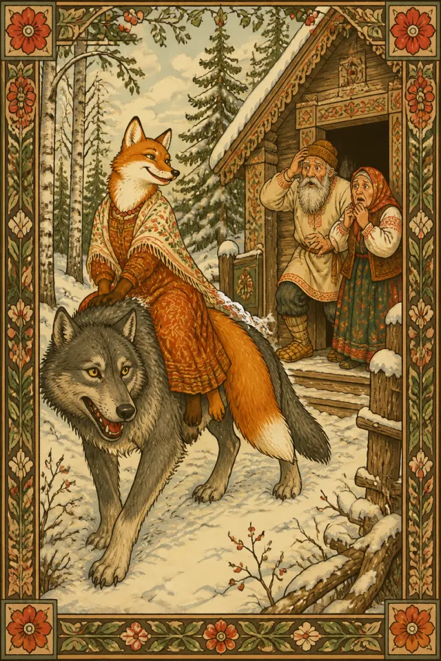
Возраст: 4+ · Популярность: Очень высокая · Чтение: 3 мин чтения
Персонажи: Лисичка-сестричка, волк +2
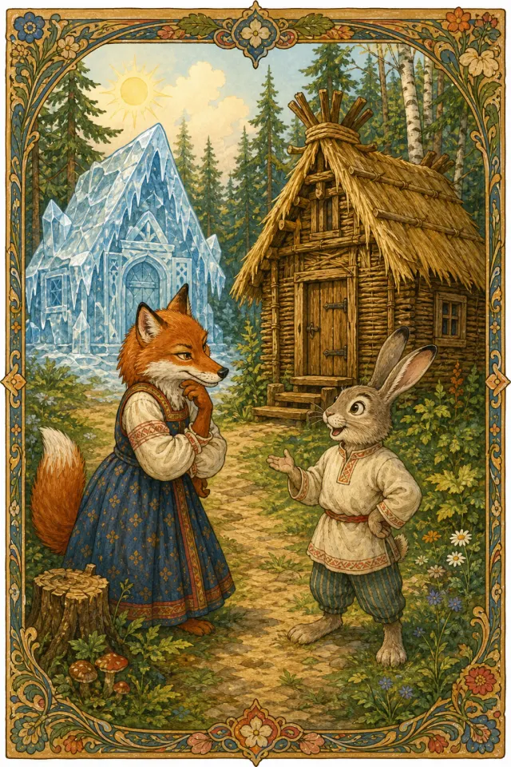
Возраст: 3+ · Популярность: Высокая · Чтение: 3 мин чтения
Персонажи: заяц, лиса +4
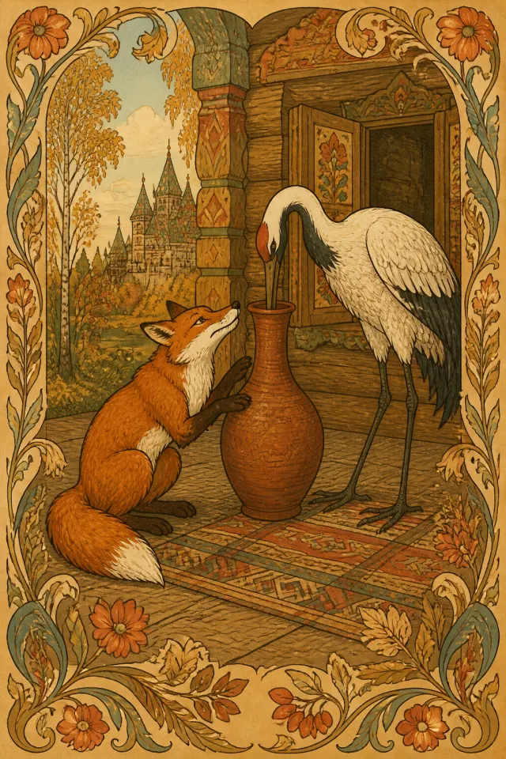
Возраст: 3+ · Популярность: Высокая · Чтение: 2 мин чтения
Персонажи: лиса, журавль
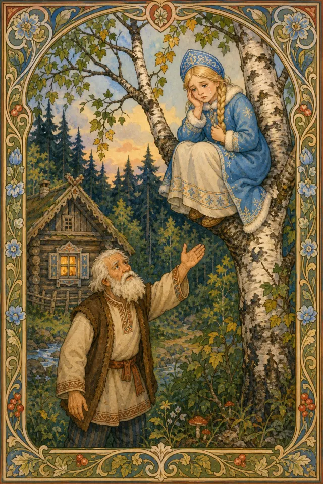
Возраст: 4+ · Популярность: Средняя · Чтение: 2 мин чтения
Персонажи: Снегурушка, дедушка +4
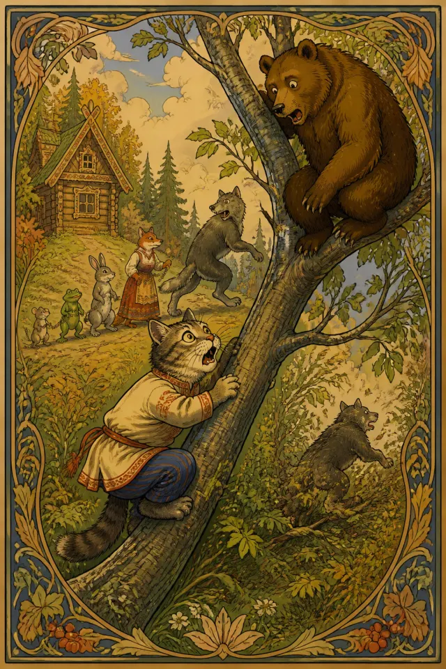
Возраст: 4+ · Популярность: Высокая · Чтение: 3 мин чтения
Персонажи: кот Котофей Иванович, лиса +3

Возраст: 5+ · Популярность: Очень высокая · Чтение: 3 мин чтения
Персонажи: падчерица, мачеха +3
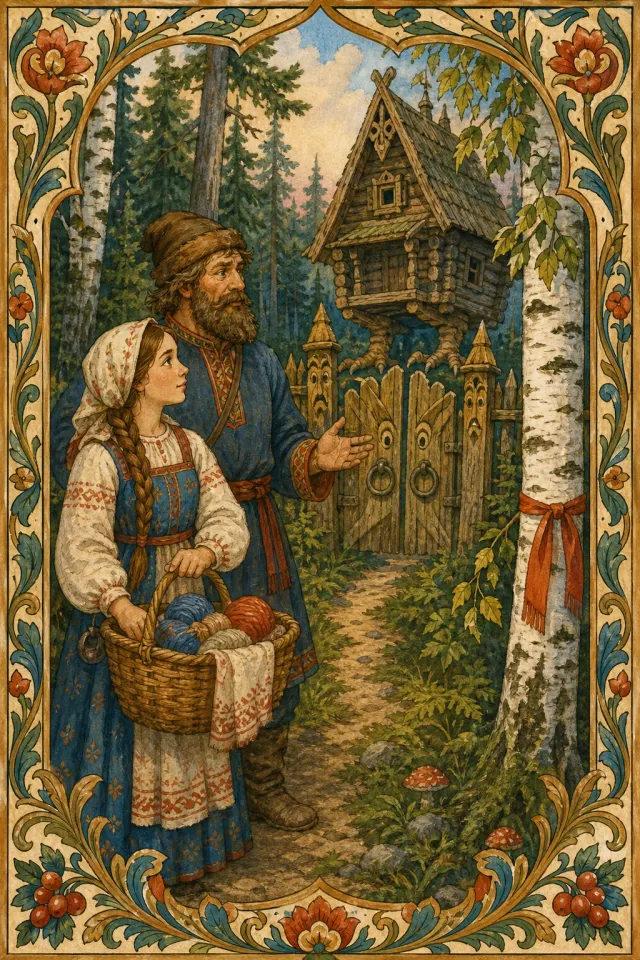
Возраст: 5+ · Популярность: Высокая · Чтение: 3 мин чтения
Персонажи: падчерица, отец +5
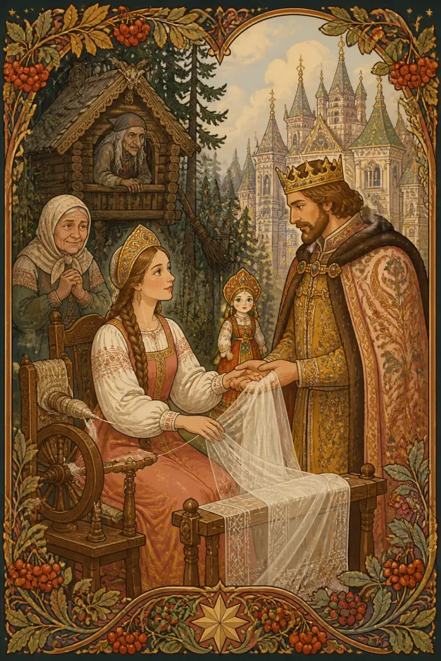
Возраст: 6+ · Популярность: Очень высокая · Чтение: 3 мин чтения
Персонажи: Василиса Прекрасная, волшебная куколка +3

Возраст: 6+ · Популярность: Очень высокая · Чтение: 7 мин чтения
Персонажи: Старик, Старуха +1
В этом разделе пока нет сказок.